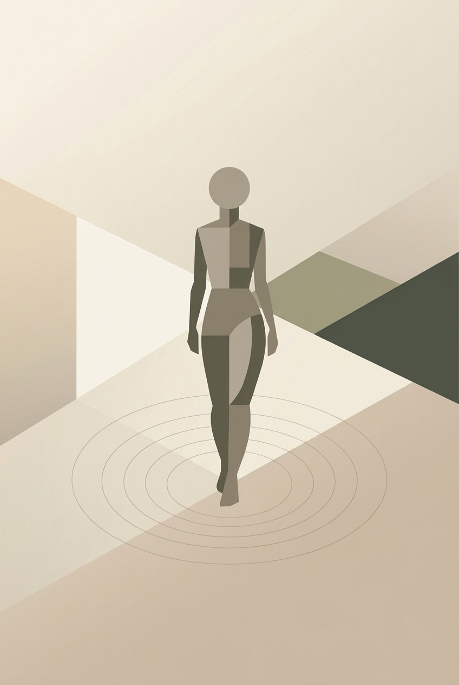
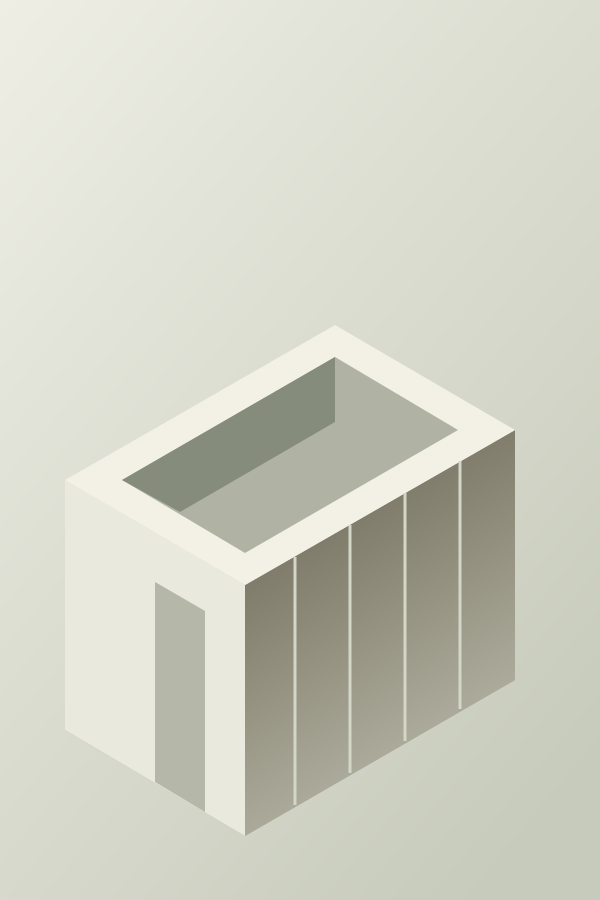
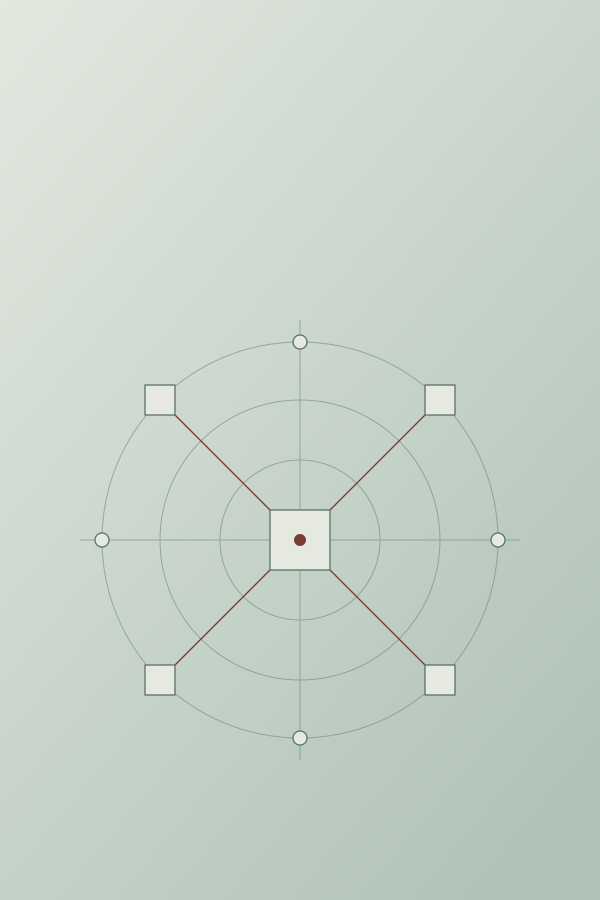

Yuqin
Zhong
PhD Researcher
ETH Zurich
Future Cities Lab Global
Understanding people.
Informing space.
Connecting research
and design.
About & CV

Understanding peopleResearchSpatial cognition.
Human experience.Explore
How do people experience space?
Behavioural experiments, multimodal human-response data and computational spatial analysis.
Design intention vs user experienceComputational spatial analysisArchitectural cognition in practicePedestrian crowd distributionRetail podia & the urban realm
Explore research 
Informing spaceDesignHuman-centred
architectural design.Explore
Designing for human experience.
Computational architectural design and industry collaborations informed by human perception, wayfinding and spatial cognition.
UNStudio collaborationWOHA collaborationMaster’s thesis
Explore design 
Building ways to investigateToolsResearch platforms.
Computational methods.Explore
Tools for asking better questions.
Research platform development and simulation workflows for investigating human experience and evaluating spaces.
Move360 research platformPedestrian simulation workflow
Explore tools Hover to preview · Click any panel to exploreLet’s connect ↓